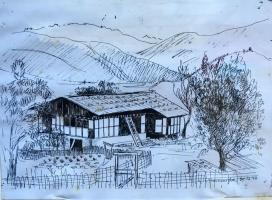

The Swiss Guesthouse was the first Guesthouse in Bumthang. It is situated at Karsumphe, a historical place with a small, traditional farmhouse, which was once the residence of the famous “Karsumphe Angye”, the older sister of the first King of Bhutan. The old house served as the headquarters of the Dairy and Forestry Project in the seventies, with office and residence for the Project Manager. Because in those days, there were quite a few Swiss Nationals working in the project who met frequently at Karsumphe, the actual name “Karsumphe Guesthouse” slowly disappeared and the guests named it just “Swiss Guesthouse”.
“Guesthouse” was probably too big a word in the beginning, since there were only very few guests, mostly travellers to the East in the early seventies, who were staying over night at Bumthang. They were happy to find a place to sleep, some food with the family and a shower after the long journey on the dusty road which was not yet blacktopped. Listening to all the nostalgic stories about this old traditional building one can hardly avoid to start singing the melody of the “Old House of Rocky Tocky”.
With the coming up of tourism, a real Guesthouse was constructed and the old house dismantled and shifted behind the new building complex. Some walls, were reused and are still visible today in the terrace. The new Building harbours the Kitchen and the Restaurant on the ground floor.
Soon enough two more buildings had to be added towards the old apple orchard with the last construction completed in autumn 2009. Since the Swiss Guesthouse is run by a cheese maker who was trained in Switzerland, it is obvious that specialities prepared with cheese such as “Fondue” and “Raclette” are served. But also “Bratwurst” and “Röschti” as well as “Züri Gschnätzlets” and many more Swiss dishes are available. Of course, visitors to Bhutan may be more interested in Bhutanese dishes (which are also available with us), but after some days in Bhutan, a change may be welcome. Just try it out!

|

|

|